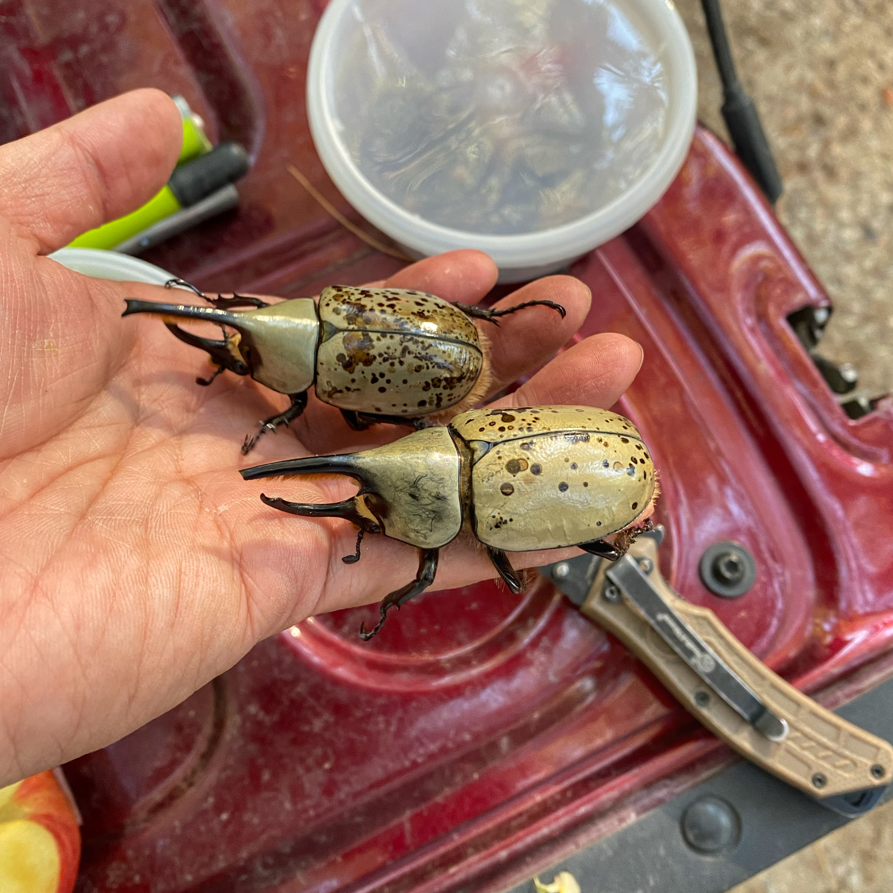

Dynastes grantii Field Expedition – Sky Islands, 2024
Posted on Sep 21, 2024
This is the second year I went to the Sky Islands to look for D. grantii. My goal was to collect at least five individuals per population and to explore and discover additional mountain ranges where D. grantii might be living. Also, visiting Payson, where the highest number of D. grantii are found, was on my bucket list...
Read More →